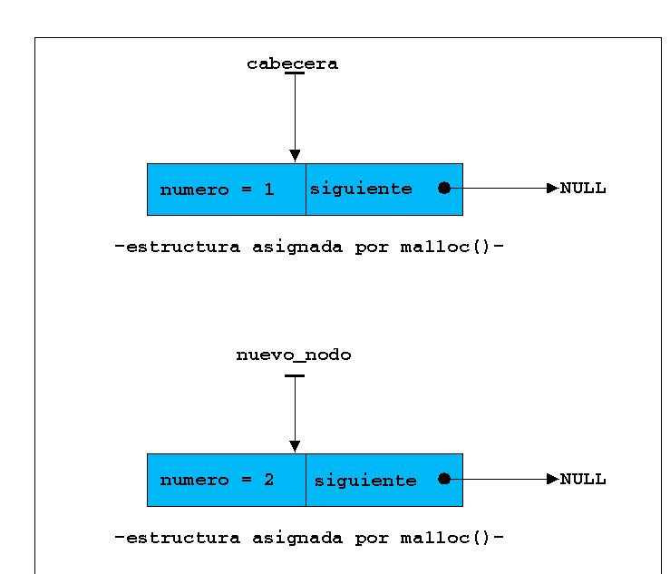
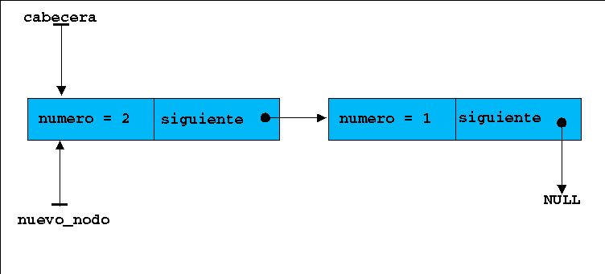
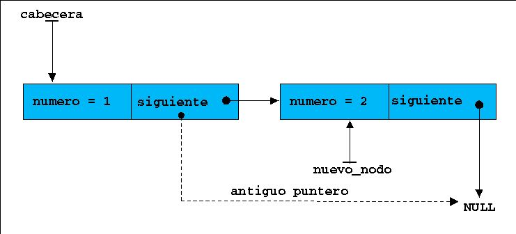

|
|
|
|
|
12.- Listas, colas y pilas (por el dr7tbien)
12.1.-Crear el primer elemento de una lista (por el dr7tbien)
12.2.-Añadir elementos a una lista (por el dr7tbien)
12.3.-Avanzar por los elementos de una lista (por el dr7tbien)
12.4.- Agregar elementos en una lista delante o detrás de otro apuntado por *indice (por el dr7tbien)
12.5.- Borrado de nodos en listas (por el dr7tbien)
12.6.- Desarrollo de un programa con lista simple (por el dr7tbien)
12.7.-Ordenamiento de la lista por orden alfabético ascendente. El concepto de doble puntero (por el dr7tbien)
12.8.- Listas circulares y doblemente enlazadas. Desarrollo de un programa con una lista doble (por el dr7tbien)
12.9.- Pilas y colas (por el dr7tbien)
 12.2.-Añadir
elementos a una lista
12.2.-Añadir
elementos a una lista
Para
añadir otro nodo a la lista deberemos de hacer lo
siguiente:
1.- Reservar espacio en memoria.
|
nuevo_nodo =
(struct datos *)malloc(sizeof(struct
datos)); |
Observa que para crear el primer nodo a la lista, malloc() devolvía un puntero a struct datos *cabecera. Como no podemos perder la referencia a cabecera -perderíamos la referencia al comienzo de la lista- asignamos el valor devuelto por malloc() a struct datos *nuevo_nodo.
2.- Insertar datos en la estructura.
|
nuevo_nodo =
2; |
En estos momentos la situación es la siguiente:

3.- Acoplar el nuevo nodo a la lista. En nuestro caso agregaremos el nodo al principio de la lista y recolocaremos los punteros
|
nuevo_nodo->siguiente
= cabecera; |
Esquemáticamente la cosa quedaría como sigue:

Los punteros *cabecera y *nuevo_nodo apuntan ambos al primer elemento de la lista, cuando creemos un nuevo elemento, *nuevo_nodo ya no apuntará al principio de la lista, sino al nuevo elemento creado. Tambien es curioso que cuando añadimos nodos la la lista, Estos son añadidos por "el principio".
Para
añadir al final de la lista el código necesario sería
algo parecido a esto:
|
nuevo_nodo =
(struct datos *)malloc(sizeof(struct datos)); |
Observa que ahora cabecera->numero es 2 y antes era 1, pues estamos añadiendo elementos al final de la lista.

Tan sólo hemos creado dos nodos de la lista, podremos crear tantos como queramos, con el límite de la memoria RAM del computador. Para poder desarrollar una estructura es esencial disponer de:
1.- Un puntero (referencia) al principio de la lista durante todo el desarrollo de la lista. Una vez perdido el inicio de la lista, perderemos la lista
2.- Un
puntero indice que nos permita avanzar por la lista. En el diagrama
siguiente situamos el indice con flechas punteadas debido a que
vararemos us posición para conocer los elementos de la lista.
3.- Un puntero que sirva para apuntar al nuevo elemento
creado para luego insertarlo en la lista.
|
|
|
|||